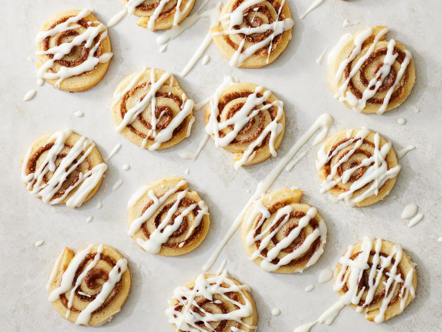

Cinnamon Roll Cookies

Description
These cinnamon roll cookies are reminiscent of a classic cinnamon roll with cream cheese icing - irresistable!
Ingredients
- 1 cup butter, softened
- 2/3 cup white sugar
- 1/2 teaspoon salt
- 1 large egg
- 1 tablespoon vanilla
- 2 cups all purpose flour
- 1 large egg, lightly beaten
- 1/2 cup packed light brown sugar
- 2 teaspoons ground cinnamon or apple pie spice
- 2 ounces cream cheese, softened
- 1 tablespoon butter, softened
- 3/4 cup confectioners sugar
- 2 to 3 tablespoons heavy cream
Steps
- Beat the butter, beat in the sugar and salt, then beat in the egg and vanilla.
- Slowly mix in the flour.
- Place the dough on plastic wrap, shape into a rectangle, wrap, and chill.
- Roll out the chilled dough on floured parchment paper. Brush with a lightly beaten egg.
- Sprinkle the brown sugar and cinnamon over the dough, then tightly roll the dough.
- Wrap in plastic wrap and freeze until firm enough to slice. Cut the dough into cookies.
- Bake the cookies until set and lightly brown. Meanwhile, make the icing.
- Drizzle the icing on the cooled cookies.
Back to main page